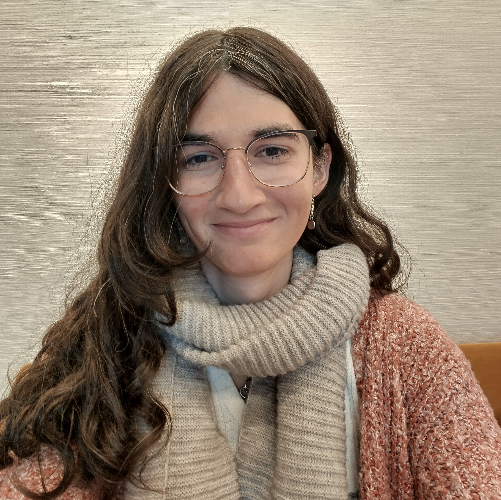

In the past, I was a Compiler Engineer at SiFive in Berkeley (California), working on the verification features of Chisel and CIRCT. I got my MSc in Computer Science, majoring in Secure and Reliable Systems with a minor in Computer Graphics, from ETH Zurich, and my BSc in Computer Science from EPFL.
I have also been affiliated to the SLICE Lab in the EECS department at UC Berkeley, where I was a Visiting Student Researcher and worked on temporal property synthesis and formal verification, advised by Kevin Laeufer. Before that, I worked with Martin Schoeberl as a Research Assistant in the Embedded Systems Engineering group at the Technical University of Denmark (DTU), where I looked into reimagining UVM for Chisel.
I am a frequent contributor to both CIRCT and Chisel, mostly working on their respective verification features. I generally only write FOSS code, and I am always interested in learning about other cool FOSS projects! I also have a love for video games, and have developped a few FOSS games, some of which are available on itch.io.
Introduction
Hi ! I'm Amelia (she/her), a Computer Scientist from Geneva - Switzerland. I'm currently a PhD student in Computer Science in the Programming Languages and System group at Princeton University (Princeton SNS), advised by Mae Milano. My work is at the intersection of Programming Languages and Computer Architecture, where I focus on designing novel languages and paradigms for hardware-software co-design and verification.In the past, I was a Compiler Engineer at SiFive in Berkeley (California), working on the verification features of Chisel and CIRCT. I got my MSc in Computer Science, majoring in Secure and Reliable Systems with a minor in Computer Graphics, from ETH Zurich, and my BSc in Computer Science from EPFL.
I have also been affiliated to the SLICE Lab in the EECS department at UC Berkeley, where I was a Visiting Student Researcher and worked on temporal property synthesis and formal verification, advised by Kevin Laeufer. Before that, I worked with Martin Schoeberl as a Research Assistant in the Embedded Systems Engineering group at the Technical University of Denmark (DTU), where I looked into reimagining UVM for Chisel.
I am a frequent contributor to both CIRCT and Chisel, mostly working on their respective verification features. I generally only write FOSS code, and I am always interested in learning about other cool FOSS projects! I also have a love for video games, and have developped a few FOSS games, some of which are available on itch.io.
News
-
Dec'25I Co-hosted NJPLS at Princeton for the first time! This was a lovely experience and I hope to have another change to orgranize the event next time it's at Princeton!
-
Feb'25My short position paper on converting SVA properties to synthesizable hardware was accepted at the LATTE workshop at ASPLOS! Looking forward to the interesting discussions there!
-
Jan'25I gave a talk at the University of Cambridge about my work on improving the state of hardware verification in high-level hardware languages.
-
Dec'24I attended my first NJPLS at Cornell Tech! Loved to have met so many great people there!
-
Nov'24I presented a poster for my work on Scalable Formal Verirification in High-Level Hardware Languages at the Ivy Collective Doctoral Engineering Symposium at Hardvard University!
-
Sep'24I gave a talk about my on-going work on Modularizing Formal Verirification in CIRCT at the CIRCT ODM.
-
Sep'24After moving across the country and wrapping up my work with SiFive, I have started my PhD at Princeton Univerity!
-
July'24I've released my first ever python package for my btor2 compiler!
-
June'24I attended my first PLDI, as well as PLMW, in Copenhagen, where I got to meet many wonderful people in the field! I also learned about choreographic programming, which particularly peaked my interest.
-
June'24My legal name change in the US finally got approved after 4 long months since filing it! 2 countries down, one to go...
-
May'24I graduated from ETH Zurich and obtained my MSc in Computer Science!!
-
April'24I started my Internship at SiFive, where I get to work on the verification features of Chisel and CIRCT.
-
April'24I successfully defended my Master Thesis!
Publications
-
Incremental Conversion of SVA Properties to Synthesizable Hardware -- Mar'25
Amelia Dobis, Fabian Schuiki, and Mae Milano
LATTE'25 ( Paper PDF ) -
Formal Verification of Hardware using MLIR -- Apr'24
Amelia Dobis
Master Thesis (Paper PDF / GitHub / DOI Link ) -
Verification of Chisel Hardware Designs with ChiselVerify -- Feb'23
Amelia Dobis, Kevin Laeufer, Hans Jakob Damsgaard, Tjark Petersen, Kasper Hesse, Enrico Tolotto, Simon Thye Andersen, Richard Lin, and Martin Schoeberl
Microprocessors and Microsystems (Paper PDF / GitHub / DOI Link ) -
Enabling Coverage-Based Verification in Chisel -- May'22
Amelia Dobis, Hans Jakob Damsgaard, Enrico Tolotto, Kasper Hesse, Tjark Petersen, and Martin Schoeberl
ETS 2022 ( Paper PDF / GitHub / DOI Link ) -
Towards Functional Coverage-Driven Fuzzing for Chisel Designs -- Nov'21
Amelia Dobis, Tjark Petersen, and Martin Schoeberl
WOSET 2021 ( Paper PDF / GitHub ) -
ChiselVerify: An Open-Source Hardware Verification Library for Chisel and Scala --
Oct'21
Amelia Dobis, Tjark Petersen, Hans Jakob Damsgaard, Kasper Hesse, Enrico Tolotto, Simon Thye Andersen, Richard Lin, and Martin Schoeberl
Best Paper Award
NorCaS 2021 ( Paper PDF / GitHub / DOI Link )
Academic Advisors
- Mae Milano -- PhD Advisor
- Kevin Laeufer -- MSc Thesis Advisor
- Martin Schoeberl -- Research Advisor
- Mikhail Asiatici -- BSc Thesis Advisor